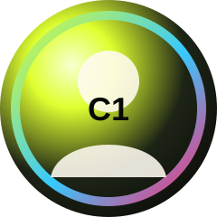
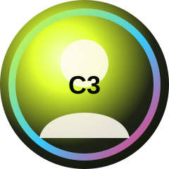
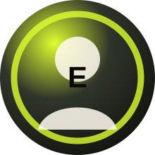

Missão
Transformar complexidade jurídica em materiais claros, úteis e visualmente memoráveis.
Visual Law / Legal Design / São Paulo
Transformo documentos, contratos, apresentações e materiais jurídicos densos em narrativas visuais claras, estratégicas e úteis.


{01} Atuação
Eu não apenas redesenho documentos. Eu reorganizo raciocínios jurídicos para que a informação seja entendida, lembrada e utilizada.
Transformar complexidade jurídica em materiais claros, úteis e visualmente memoráveis.
Construir uma comunicação jurídica mais compreensível, segura e estratégica.
Unir leitura jurídica, arquitetura da informação, narrativa e design visual.
{02} Forma
O conteúdo original tem volume, técnica e camadas que dificultam a entrada do leitor.
A informação é reorganizada por hierarquia, sequência, objetivo e destinatário.
Fluxos, destaques, grids, ícones e blocos criam uma jornada de compreensão.
O material final orienta leitura, decisão, apresentação, treinamento ou circulação.
{03} Cases
Materiais jurídicos transformados em peças visuais com leitura clara, hierarquia forte e apresentação premium.


{04} Depoimentos
Estrutura pronta para substituir por fotos reais. A composição segue a lógica visual do Nimo: arco amplo, centro forte e avatares orbitando a mensagem.



“Quando a informação jurídica é bem organizada, ela deixa de ser apenas lida — ela passa a orientar decisões.”
{05} Processo
Entendo o material, o público, o risco e o objetivo da comunicação.
Organizo hierarquia, sequência, mensagens-chave e pontos de atrito.
Transformo conteúdo em layout, fluxos, ícones, destaques e narrativa visual.
Finalizo materiais para apresentação, treinamento, circulação ou tomada de decisão.
{06} Contato
Envie o documento, objetivo e contexto. Eu analiso como transformar a informação jurídica em uma peça mais clara, visual e estratégica.